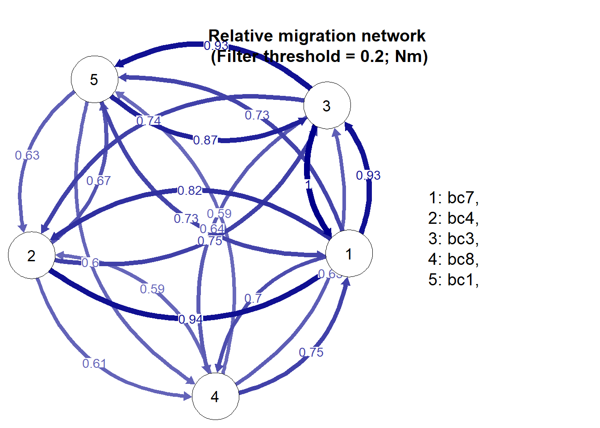
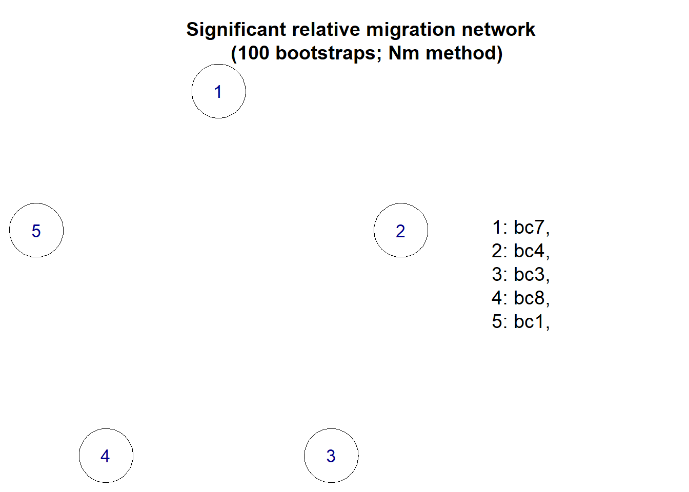
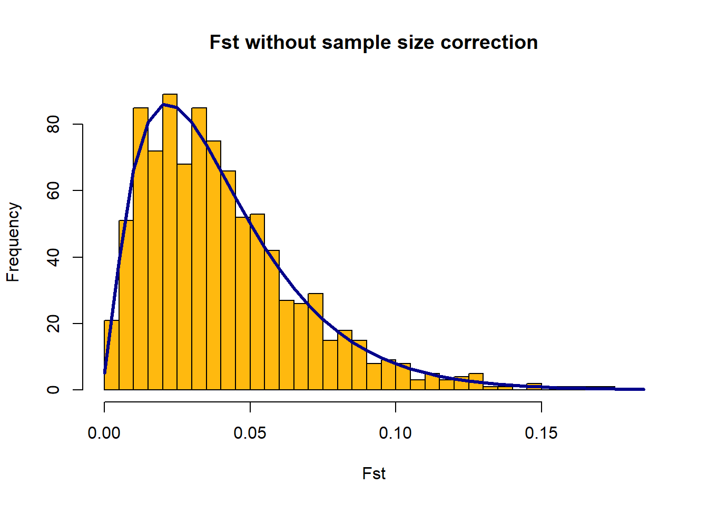
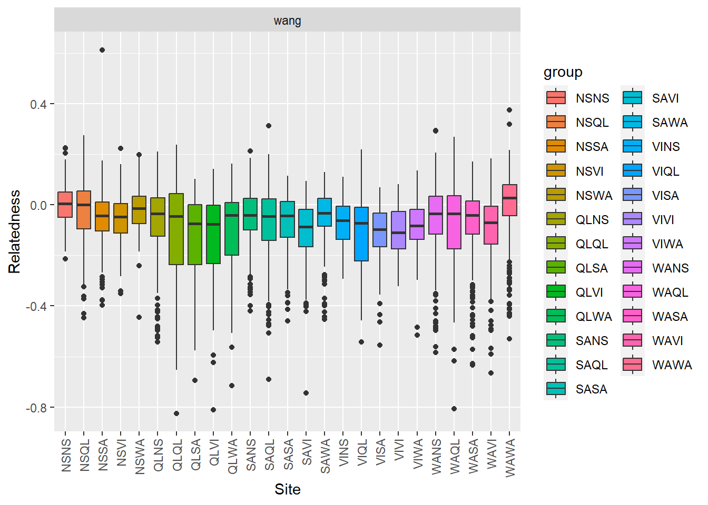

install.packages("dartRverse")
install.packages("adegenet")
install.packages("directlabel") #needed for PCA
install.packages("networkD3") #needed for private allele analysis
install.packages("related_1.0.tar.gz",
repos = NULL) # located in your working directory
install.packages("devtools")
devtools::install_github("kkeenan02/diveRsity")
if (!require("BiocManager", quietly = TRUE))
install.packages("BiocManager")
BiocManager::install("snpStats", force = TRUE, update = FALSE) #for LD
BiocManager::install("qvalue")
BiocManager::install("SNPRelate")
devtools::install_github('mijangos81/ggtern') # for HWE diagnostics
devtools::install_github('green-striped-gecko/dartR.base', ref = "dev")
devtools::install_github('green-striped-gecko/dartR.popgen', ref = "dev")
devtools::install_github('green-striped-gecko/dartR.sexlinked', ref = "dev")Install packages
Setting up R environments
Getting set up
To begin, you should download and install R from the CRAN. This is the online hub for the R language and it stands for Comprehensive R Archive Network. Be sure to download the correct R installation for your operating system.
We also strongly recommend you install RStudio, a front-end for R. This utility makes working in the R environment a lot more straightforward, standardises things across operating systems and has many helpful features. For the purposes of these tutorials, we will assume you are using RStudio.
With both R and RStudio installed, start Rstudio and we will begin!
For this tutorial I use R version 4.2 and Rstudio version 2023.09.1, but newer versions work as well.
Install packages
If you have trouble installing packages try to “restart R” under “Session”.
Remember to read the error messages, sometimes you are missing a package not listed below.
If you have issues installing the related package (e.g. on Mac), you can find more instructions here.
Tip
You can check the packages (and versions) that I used for this tutorial under the Let's get started tab, at the bottom: Session information.
Load packages
library(dartRverse)
library(adegenet)
library(diveRsity)
library(snpStats) #only for LD
library(ggtern) # for HWE diagnostics
library(related)Test several key functions
You can test if the packages were installed properly by running some functions on a test dataset from dartR.
bandicoot.gl <- dartR.data::bandicoot.glfst.res <- dartR.base::gl.fst.pop(bandicoot.gl, nboots = 100, verbose = 0)
fst.res$Fsts WA SA QLD NSW VIC
WA NA NA NA NA NA
SA 0.01284780 NA NA NA NA
QLD 0.01914757 0.008299097 NA NA NA
NSW 0.01976912 0.005642649 0.002860581 NA NA
VIC 0.01961053 0.011817948 0.007405903 0.006554746 NAfst.res$Pvalues WA SA QLD NSW VIC
WA NA NA NA NA NA
SA 0 NA NA NA NA
QLD 0 0 NA NA NA
NSW 0 0 0.01 NA NA
VIC 0 0 0.00 0 NAbasic.stats <- dartR.base::utils.basic.stats(bandicoot.gl)
basic.stats$overall Ho Hs Ht Dst Htp Dstp Fst Fstp Fis Dest
0.3232 0.3400 0.3431 0.0031 0.3439 0.0039 0.0091 0.0113 0.0493 0.0059
Gst_max Gst_H
0.6126 0.0185 source("gl2gpop_FDD.R")
gl2gpop(bandicoot.gl, filename = "data/genepop.gen")
migration <- diveRsity::divMigrate(infile = "data/genepop.gen", boots = 100, stat = "Nm", plot_network = TRUE, para = TRUE, filter_threshold = 0.2)

colnames(migration$nmRelMig) <- adegenet::popNames(bandicoot.gl)
rownames(migration$nmRelMig) <- adegenet::popNames(bandicoot.gl)
migration$nmRelMig NSW QLD SA VIC WA
NSW NA 0.8164793 0.9320130 0.6981982 0.7346275
QLD 0.9358883 NA 0.7482388 0.6110798 0.6722854
SA 1.0000000 0.7437246 NA 0.6444849 0.9344058
VIC 0.7454293 0.5942128 0.6335472 NA 0.5895053
WA 0.7316944 0.6278427 0.8720564 0.6045926 NAoutliers <- dartR.popgen::gl.outflank(bandicoot.gl,
plot = TRUE,
LeftTrimFraction = 0.05,
RightTrimFraction = 0.05,
Hmin = 0.1,
qthreshold = 0.05,)Starting gl2gi
Processing genlight object with SNP data
Matrix converted.. Prepare genind object...
Completed: gl2gi
Calculating FSTs, may take a few minutes...
outliers$outflank$numberLowFstOutliers[1] 0outliers$outflank$numberHighFstOutliers[1] 0relate <- dartR.base::gl2related(bandicoot.gl, verbose = 0)
pop.code <- substr(bandicoot.gl$pop, start = 1, stop = 2) #Related only takes 2 letter code for population
relate$V1 <- paste0(pop.code, "_", relate$V1)
pw.rel <- related::coancestry(relate, lynchli = 1, lynchrd = 1,trioml = 0L, dyadml = 0L,
quellergt = 1, wang = 1, ritland = 1)
save(pw.rel, file = "data/bandicoot_relatedness.Rdata")res <- pw.rel$relatedness
plot.data <- tidyr::gather(res, condition, measurement, 5:11, factor_key = TRUE)
plot <- ggplot2::ggplot(plot.data[plot.data$condition == "wang",],
ggplot2::aes(x = group, y = measurement,
fill = group)) +
ggplot2::geom_boxplot() +
ggplot2::facet_wrap(condition~.) +
ggplot2::labs(x = "Site", y = "Relatedness") +
ggplot2::theme(axis.text.x = element_text(angle = 90, vjust = 0.5, hjust = 1))
print(plot)